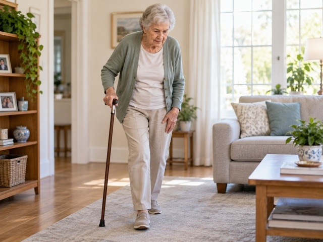

Trước khi vào bài
Hoạt động 1 · Bạn đã gặp những bệnh nhân này chưa?

Gợi ý trả lời
How long have you had the pain, and did it start suddenly or gradually?
Bác đau đã bao lâu rồi, và cơn đau bắt đầu đột ngột hay từ từ?
Do you sit for long periods at your desk, and how often do you get up to move around?
Bác có ngồi liên tục nhiều giờ ở bàn làm việc không, và bao lâu bác đứng dậy đi lại một lần?
Do you get any regular exercise during the week, or does the pain get worse at any particular time of day?
Bác có tập thể dục đều đặn trong tuần không, và cơn đau có nặng hơn vào thời điểm nào trong ngày không?
Gợi ý trả lời
Rest for a few days and ice the knee — don't run again until the swelling goes down.
Hãy nghỉ vài ngày và chườm đá đầu gối — đừng chạy lại cho đến khi hết sưng.
Try to avoid running on hard surfaces and cut your weekly mileage in half until the pain settles.
Cố gắng tránh chạy trên bề mặt cứng và giảm quãng đường chạy mỗi tuần xuống một nửa cho đến khi hết đau.
Check your running shoes and build up your distance gradually — a sudden jump in training load is often the real cause.
Kiểm tra lại giày chạy và tăng quãng đường một cách từ từ — việc tăng khối lượng tập đột ngột thường là nguyên nhân thật sự.

Gợi ý trả lời
Low-impact activities like walking or swimming are much safer for you than running or jumping.
Các hoạt động ít gây áp lực lên khớp như đi bộ hoặc bơi lội sẽ an toàn hơn nhiều so với chạy hay nhảy.
Gentle balance exercises, such as tai chi, can improve mobility and lower the risk of falls.
Các bài tập giữ thăng bằng nhẹ nhàng như thái cực quyền có thể cải thiện sự linh hoạt và giảm nguy cơ té ngã.
Some gentle stretching every morning will help with the stiffness, but always warm up slowly first.
Kéo giãn nhẹ nhàng mỗi sáng sẽ giúp giảm cứng khớp, nhưng luôn phải khởi động từ từ trước đó.

Gợi ý trả lời
Regular exercise lowers blood pressure and controls blood sugar — even 30 minutes of walking a day helps.
Tập thể dục đều đặn giúp hạ huyết áp và kiểm soát đường huyết — chỉ cần đi bộ 30 phút mỗi ngày cũng có tác dụng.
Staying active helps you manage your weight and reduces the risk of heart disease over the long term.
Vận động thường xuyên giúp kiểm soát cân nặng và giảm nguy cơ mắc bệnh tim mạch về lâu dài.
You don't need to start big — a short 10-minute walk after each meal is a realistic way to build the habit.
Bác không cần bắt đầu từ những việc lớn — chỉ cần đi bộ 10 phút sau mỗi bữa ăn là cách thực tế để tạo thói quen.

Gợi ý trả lời
I try to fit in short walks between shifts, even if it's only 15–20 minutes.
Tôi cố gắng tranh thủ đi bộ ngắn giữa các ca trực, dù chỉ được 15–20 phút.
On night shifts I usually take the stairs instead of the lift and do a quick home workout when I get back.
Trong ca đêm tôi thường đi thang bộ thay vì thang máy và tập nhanh tại nhà khi về.
Honestly it's hard to be consistent, so I make up for it with a longer session on my day off.
Thật ra rất khó tập đều, nên tôi bù lại bằng một buổi tập dài hơn vào ngày nghỉ.
Gợi ý trả lời
I usually recommend starting small — walking three times a week — and building up gradually from there.
Tôi thường khuyên bắt đầu từ mức nhỏ — đi bộ ba lần mỗi tuần — rồi tăng dần lên.
I try to tailor the plan to the patient's condition — someone with knee problems needs a very different routine.
Tôi cố gắng điều chỉnh kế hoạch phù hợp với tình trạng của bệnh nhân — người bị đau khớp gối cần một chế độ tập khác hẳn.
I like to set a realistic, measurable goal, like 30 minutes of walking five days a week, rather than a vague instruction.
Tôi thích đặt một mục tiêu thực tế, đo lường được, như đi bộ 30 phút năm ngày mỗi tuần, thay vì chỉ dặn chung chung.
Hoạt động 2 · Bạn đã có bao nhiêu từ cho 10 nhóm?
What sports do you play, do or go?
Gợi ý từ
play / do / go + sport · football · basketball · volleyball · tennis · table tennis · rugby · hockey · athletics · gymnastics · swimming · cycling · horse riding · sailing · surfing · windsurfing · skiing
What do you actually do in a training session?
Gợi ý từ
play / do / go + sport · watch sport on television · do any sport · play in a team · play against other teams · wear a helmet / special shoes
Who is involved in a sport, on and off the pitch?
Gợi ý từ
player · goalkeeper · captain · team · cyclist · footballer · surfer · gymnast · athlete · champion racing driver
Where do people do sport, and what do they need for it?
Gợi ý từ
equipment · helmet · racket · bat · board · sail · stick · skis · net · field · swimming pool · indoors / outdoors
Why is exercise good for the body — and the mind?
Gợi ý từ
It's fun / great / wonderful · It's good for you · It's not very dangerous
What can go wrong with sport and exercise?
Gợi ý từ
dangerous · not very dangerous · fall · wear a helmet
How often, and when, do you exercise?
Gợi ý từ
always · usually · often · sometimes · never · in my free time
How do you feel about sport — and how do you say it?
Gợi ý từ
fun · exciting · great · wonderful · easy · quite skilful · boring · difficult
How do people get better, win, or reach their goals?
Gợi ý từ
can play … well · champion · go very fast · get wet
What should governments, employers and hospitals do about exercise?
Gợi ý từ
sports centre · sports camp · swimming pool opens at… · fitness training · football practice